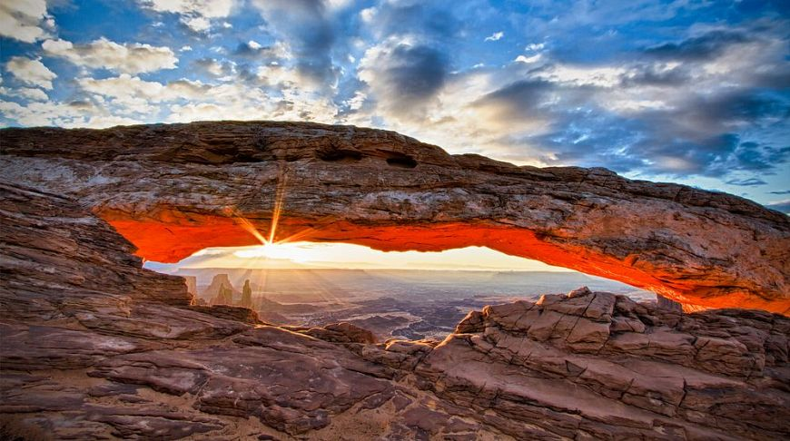
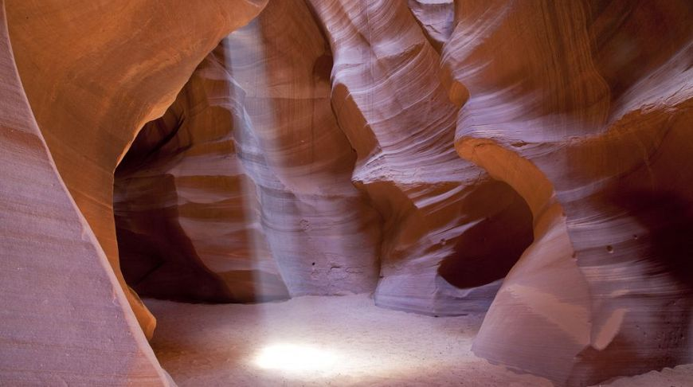
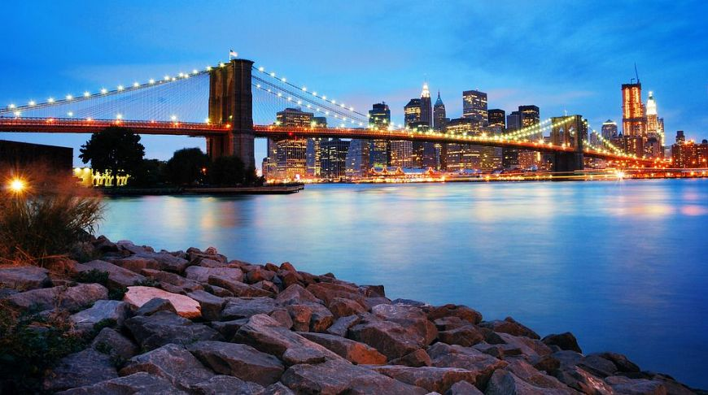
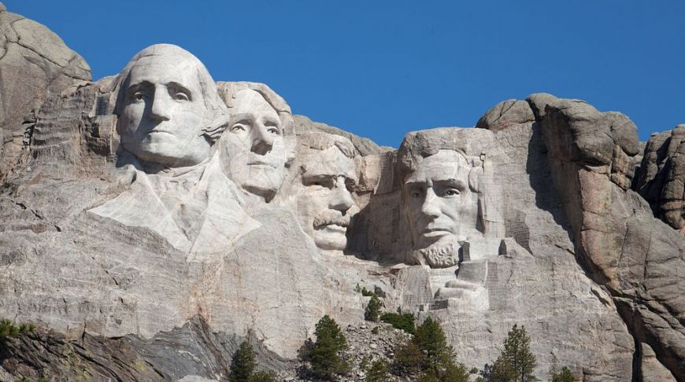

Это место просто создано для созерцания. Здесь нет такого разнообразия троп, как в других парках, но зато нет толпы. Смотровая площадка расположена на 1700 м над уровнем моря, и каньон, проделанный рекой Колорадо, прямо как на ладони.
Меса Арк, Юта
Пустыни, вопреки стереотипу, далеко не самые скучные места на планете. Взять хотя бы эту скалистую арку над пропастью. Она похожа на окно, из которого можно рассмотреть парк Каньонлендс. А если у вас достаточно смелости, на арку можно забраться, чтоб сделать более панорамное и захватывающее фото.


Каньон Антилопы, Аризона
Это мистическое место принадлежит индейцам племени навахо, поэтому за вход нужно заплатить пошлину и обязательно взять проводника. Лучше всего сюда приезжать весной и осенью, когда солнечные лучи достигают самого дна каньона и подсвечивают его изнутри.
Бруклинский мост, Нью-Йорк
Если у вас есть время для вечерней прогулки по Бруклинскому мосту — не забудьте захватить с собой фотоаппарат! Ведь именно отсюда открывается самый красивый вид на Манхэттен. Известный силуэт, отраженный на поверхности Ист-Ривер, не оставит вас равнодушными. Это место идеально подойдет для романтических фотосессий.


Гора Рашмор, Южная Дакота
Символ Америки, лица отцов-основателей, высеченные в скале Рашмор. Для создания этой композиции скульптору Гутзону Борглуму потребовалось 14 лет и 400 рабочих. Этот барельеф фигурировал во многих художественных фильмах, мультиках и вдохновлял музыкантов на создание альбомов.